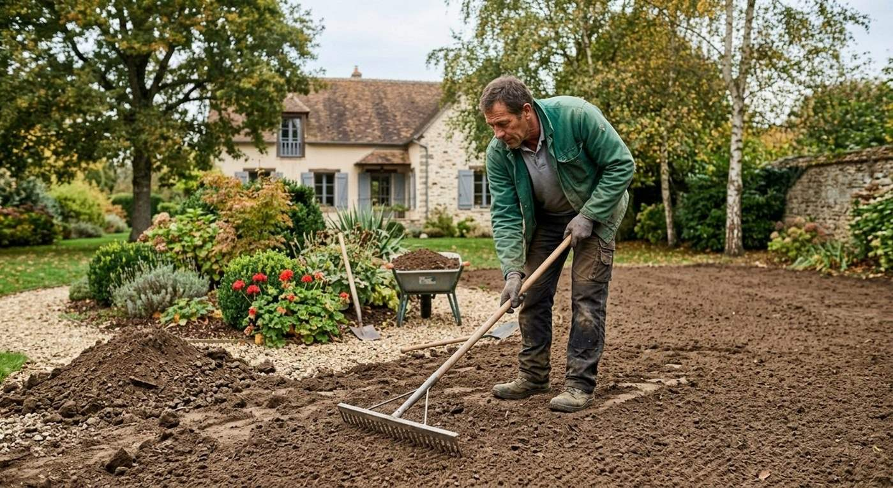

Prestations
Créer, aménager, entretenir votre jardin.
Du plan à la dernière plantation, nous prenons en charge l'aménagement paysager de votre extérieur à Conflans-Sainte-Honorine.


Création d'espaces verts
Pelouse, massifs, bordures, cheminements : nous structurons votre terrain pour qu'il soit agréable et simple à entretenir.
- Plan d'aménagement
- Engazonnement et massifs
- Allées et bordures

Terrassement et préparation
Nivellement, préparation du sol et mise en forme avant plantation ou engazonnement.
- Nivellement du terrain
- Préparation des sols
- Mise en forme des espaces

Plantations
Arbustes, vivaces et massifs choisis selon la lumière de votre jardin et la nature de votre sol.
- Arbustes et vivaces
- Massifs et bordures
- Conseils d'arrosage

Entretien et taille
Tonte, taille de haies et ramassage des feuilles pour un jardin net.
- Tonte des pelouses
- Taille des haies
- Entretien saisonnier
Parlons de votre jardin.
Un terrain à aménager ou un entretien à confier ? Dites-nous ce dont vous avez besoin.